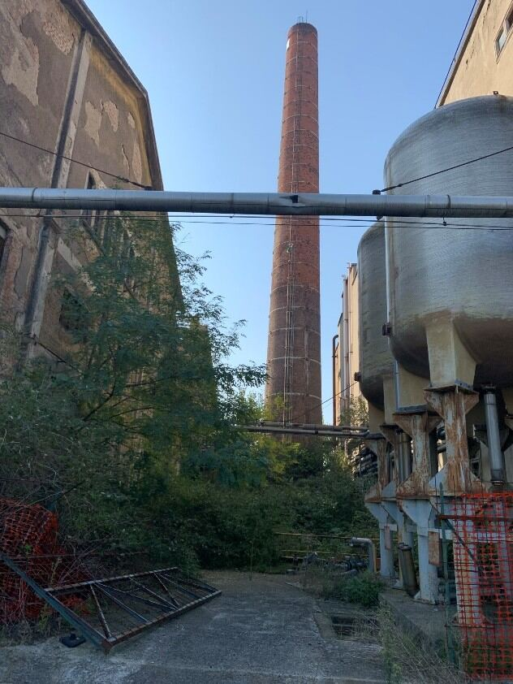

Cos'è e quando serveUno smantellamento, tre problemi da gestire insieme
Un grande compendio industriale dismesso non è mai un problema puramente edilizio. Sotto la superficie ci sono spesso suoli e acque di falda contaminati da decenni di lavorazioni; nelle strutture ci sono coperture, coibentazioni e tubazioni che possono contenere amianto; e c'è, infine, l'edificio vero e proprio da abbattere, con le sue fondazioni e le eventuali strutture interrate. Trattare questi tre aspetti come progetti separati, magari affidati a imprese e direttori lavori diversi, moltiplica i tempi di coordinamento, i rischi di interferenza tra le lavorazioni e, alla fine, i costi. Il decommissioning è la risposta a questo problema: un processo integrato in cui bonifica dei suoli, rimozione dell'amianto e demolizione procedono insieme sotto un'unica Direzione Lavori, con un cronoprogramma unico e una sola interfaccia con la committenza e con gli enti di controllo.
È oggi, per lo studio, il tipo di intervento più frequente: la maggior parte dei cantieri che seguiamo — dismissioni per compravendita, riconversioni verso nuove destinazioni residenziali o direzionali, chiusure di stabilimenti obsoleti — richiede questo approccio integrato, non una singola prestazione isolata.
Il quadro normativo
Una delle leve tecniche più rilevanti nei cantieri di decommissioning è il recupero degli inerti direttamente in cantiere, tramite impianti mobili di frantumazione e vagliatura autorizzati ai sensi dell'art. 208 del D.Lgs. 152/06: anziché essere trasportati a un impianto esterno, i materiali da demolizione (calcestruzzo, laterizi, materiali misti) vengono trattati sul posto e riutilizzati come sottofondi o rilevati nello stesso cantiere. Il beneficio è concreto — meno conferimenti in discarica, meno traffico pesante di autocarri, minori costi complessivi — ed è la specificità su cui lo studio ha costruito una competenza distintiva fin dalla metà degli anni Novanta.
Perché un aggregato riciclato da costruzione e demolizione possa essere reimpiegato come prodotto, e non più gestito come rifiuto, deve rispettare i criteri di End of Waste stabiliti dal DM 127/2024, in vigore dal 26 settembre 2024, con obbligo di adeguamento degli impianti entro il 25 marzo 2025. Il decreto ha sostituito il precedente DM 152/2022, di cui correggeva alcune criticità applicative, ampliando gli impieghi ammessi per gli aggregati recuperati. Le autorizzazioni al recupero sono tracciate nel registro nazionale ReCER, e una revisione ministeriale dei criteri, basata sui dati di monitoraggio raccolti, è attesa entro settembre 2026.
Un secondo flusso da gestire è quello delle terre e rocce da scavo, disciplinato dal DPR 120/2017: quando rispettano determinati requisiti di qualità, possono essere gestite come sottoprodotti ai sensi dell'art. 184-bis del D.Lgs. 152/06, ed essere quindi riutilizzate anziché smaltite come rifiuto. Nei siti con un passato bellico rilevante, prima di aprire gli scavi va valutata l'opportunità di una bonifica bellica preventiva. Infine, quando la demolizione riguarda strutture interrate — vasche, serbatoi, fondazioni profonde — le attività di strip-out (rimozione degli impianti e delle finiture interne prima dell'abbattimento strutturale) e di demolizione vera e propria richiedono una sequenza operativa attentamente pianificata, per evitare cedimenti incontrollati e per intercettare eventuali contaminazioni residue nelle strutture sotterranee.
Come si procede in pratica
Il cantiere si apre in genere con la bonifica dell'amianto, propedeutica a qualsiasi lavorazione strutturale: coperture, coibentazioni e manufatti contenenti amianto vengono censiti, valutati e rimossi prima che inizino le demolizioni. In parallelo, se il sito presenta contaminazioni del sottosuolo, prosegue la bonifica dei suoli, secondo le tecnologie e le procedure previste dal D.Lgs. 152/06. Solo a queste condizioni verificate si procede con la demolizione controllata delle strutture, spesso preceduta da attività di strip-out per separare le diverse frazioni di rifiuto (metalli, legno, materiali misti, inerti) fin dalla fonte.
I materiali inerti prodotti vengono classificati e, dove le condizioni del cantiere e la qualità dei materiali lo consentono, trattati con impianto mobile in sito per essere reimpiegati direttamente, con conseguente riduzione dei volumi conferiti a smaltimento esterno. Le terre e rocce da scavo compatibili vengono gestite come sottoprodotti; quelle non idonee seguono l'iter di smaltimento come rifiuto. Il cantiere si chiude con la restituzione dell'area, corredata della documentazione di tracciabilità dei rifiuti prodotti e, dove previsto, della certificazione di avvenuta bonifica.
I nostri interventi
Nel decommissioning dell'ex Novaceta di Magenta (2021-2025), già sede di Novaceta, SNIA ed Enercel, abbiamo redatto tre distinti progetti di bonifica per i diversi lotti del sito e diretto la bonifica di amianto e FAV insieme alla demolizione integrale dei fabbricati. Nell'ex Sofer di Arco Felice, per Prysmian (2024-2025), la Direzione Lavori ha dovuto riorganizzare le attività dopo il ritrovamento in corso d'opera di amianto compatto e friabile, contenendo i costi dell'imprevisto. Sull'ex SGL Carbon di Ascoli Piceno (2000-2025), un compendio industriale dismesso di grandi dimensioni destinato in parte a parco pubblico, abbiamo curato in un unico incarico il Progetto Operativo di Bonifica, il Piano di Lavoro Amianto e la progettazione della demolizione e del decommissioning degli impianti.
La competenza sul recupero degli inerti affonda le radici negli anni Novanta, con i primi impianti di riciclaggio dei rifiuti da costruzione e demolizione seguiti dallo studio: Corbetta nel 1994, Santo Stefano Magra nel 1995 e Cascina nel 1996 — la base di un know-how sul trattamento degli inerti che applichiamo ancora oggi nei cantieri di decommissioning.
Domande frequenti
Cosa significa decommissioning e come si differenzia dalla semplice demolizione?
Il decommissioning è lo smantellamento controllato di un compendio industriale nel suo insieme: comprende la bonifica dei suoli, la rimozione dell'amianto e la demolizione delle strutture, coordinate sotto un'unica Direzione Lavori. La semplice demolizione riguarda invece solo l'abbattimento fisico degli edifici e presuppone che le altre passività ambientali siano già state gestite, o rischia di trascurarle.
Cos'è il recupero inerti in cantiere e quali vantaggi comporta?
È il trattamento dei rifiuti da demolizione direttamente nel luogo in cui vengono prodotti, tramite impianti mobili autorizzati ai sensi dell'art. 208 del D.Lgs. 152/06, che frantumano e vagliano i materiali per riutilizzarli in cantiere come sottofondi o rilevati. Riduce i conferimenti in discarica, il traffico pesante di autocarri verso impianti esterni e i costi complessivi dell'intervento.
Cos'è l'End of Waste e cosa cambia con il DM 127/2024?
L'End of Waste è il momento in cui un rifiuto, dopo un trattamento di recupero, cessa di essere classificato come tale e diventa un prodotto (l'aggregato riciclato) utilizzabile liberamente sul mercato. Il DM 127/2024, in vigore dal 26 settembre 2024 con adeguamento degli impianti entro il 25 marzo 2025, ha sostituito il precedente DM 152/2022 correggendone le criticità e ampliando gli impieghi ammessi per gli aggregati da costruzione e demolizione, tracciati nel registro nazionale ReCER.
Cosa sono le terre e rocce da scavo e come si gestiscono?
Sono i materiali scavati durante lavori edili o di bonifica che, se rispettano determinati requisiti di qualità, possono essere gestiti come sottoprodotti anziché come rifiuti, secondo l'art. 184-bis del D.Lgs. 152/06 e la disciplina attuativa del DPR 120/2017. In questo modo possono essere riutilizzati in sito o in altri cantieri, invece di essere smaltiti in discarica.
Serve sempre la bonifica bellica prima di demolire?
Non sempre, ma è una verifica da considerare fin dalla fase di pianificazione su siti che hanno subito bombardamenti durante la Seconda Guerra Mondiale o che sorgono in aree storicamente interessate da eventi bellici: un ordigno inesploso individuato a scavo iniziato può bloccare il cantiere per settimane. La bonifica bellica preventiva, condotta con indagini magnetometriche, evita questo rischio prima dell'avvio degli scavi.